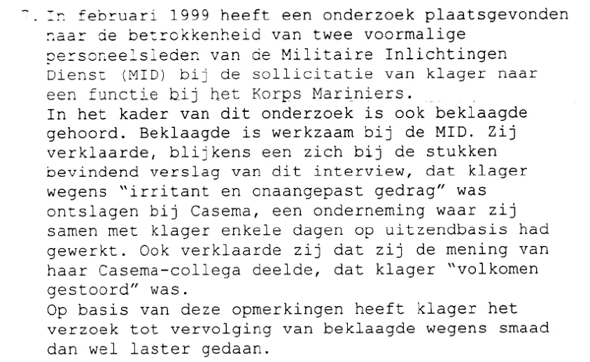

Beweisstück · Beschluss
Berufungsgericht Den Haag, Beschluss über die Beschwerde nach Artikel 12, 19. Dezember 2002
Die Passage
„Im Februar 1999 fand eine Untersuchung über die Beteiligung zweier ehemaliger Mitarbeiter des Militärischen Nachrichtendienstes (MID) an der Bewerbung des Beschwerdeführers um eine Stelle beim Korps Mariniers statt. Im Rahmen dieser Untersuchung wurde auch die Beschuldigte befragt. Die Beschuldigte ist beim MID tätig. Sie erklärte ausweislich eines bei den Akten befindlichen Berichts über dieses Interview, dass der Beschwerdeführer wegen ‚lästigen und unangepassten Verhaltens‘ bei Casema entlassen worden sei, einem Unternehmen, bei dem sie zusammen mit dem Beschwerdeführer einige Tage auf Zeitarbeitsbasis gearbeitet hatte. Ferner erklärte sie, dass sie die Meinung ihres Casema-Kollegen teile, der Beschwerdeführer sei ‚vollkommen verrückt‘. Auf der Grundlage dieser Äußerungen hat der Beschwerdeführer die Strafverfolgung der Beschuldigten wegen übler Nachrede beziehungsweise Verleumdung beantragt.“ Seite 2 des Beschlusses, Rn. 7. Aus dem Niederländischen übersetzt; der Originaltext steht unten.
Originaltext
“In februari 1999 heeft een onderzoek plaatsgevonden naar de betrokkenheid van twee voormalige personeelsleden van de Militaire Inlichtingen Dienst (MID) bij de sollicitatie van klager naar een functie bij het Korps Mariniers. In het kader van dit onderzoek is ook beklaagde gehoord. Beklaagde is werkzaam bij de MID. Zij verklaarde, blijkens een zich bij de stukken bevindend verslag van dit interview, dat klager wegens “irritant en onaangepast gedrag” was ontslagen bij Casema, een onderneming waar zij samen met klager enkele dagen op uitzendbasis had gewerkt. Ook verklaarde zij dat zij de mening van haar Casema-collega deelde, dat klager “volkomen gestoord” was. Op basis van deze opmerkingen heeft klager het verzoek tot vervolging van beklaagde wegens smaad dan wel laster gedaan.” Der Beschluss schreibt den Namen der Beschuldigten „Overduin“.

Warum dieses Dokument wichtig ist
Im Jahr 2018 bestritt Verteidigungsministerin Ank Bijleveld, dass das Verteidigungsministerium Giltay jemals als „völlig verrückt“ bezeichnet habe. Dieser Beschluss stellt fest, dass eine Mitarbeiterin des MID laut dem Interviewbericht vom Februar 1999 erklärt hatte, sie teile die Meinung ihres Casema-Kollegen, Giltay sei „vollkommen verrückt“. Der Bericht selbst spricht im Plural von ihren „CASEMA collegae“. Der Verteidigungsminister übernahm diesen Bericht in seinen Standpunkt gegenüber dem Nationalen Ombudsmann und machte sich die Qualifizierung damit zu eigen. Das Berufungsgericht wies die Beschwerde zurück, nicht weil die Äußerungen nicht gefallen wären, sondern weil sich nicht feststellen ließ, ob die Mitarbeiterin ihnen Öffentlichkeit verschaffen wollte.
Herkunft
- Dokument
- Beschluss des Berufungsgerichts Den Haag, in nichtöffentlicher Sitzung
- Gericht
- Berufungsgericht Den Haag
- Aktenzeichen
- 01065K09
- Datum
- 19. Dezember 2002
- Betreff
- Beschwerde nach Artikel 12 der niederländischen Strafprozessordnung (Klageerzwingungsverfahren) gegen die Weigerung, die Beschuldigte wegen übler Nachrede oder Verleumdung strafrechtlich zu verfolgen
- Beschwerdeführer
- E.F. Giltay, unterstützt von Rechtsanwältin A. Wladimiroff
- Beschuldigte
- B. Overduin
- Richter
- De Vries, Vizepräsident und Vorsitzender, mit Van Dijk und Coster van Voorhout; Urkundsbeamter Berkepeis
- Bezüge
- Beschwerdeschrift am 7. März 2001 bei der Geschäftsstelle eingegangen; schriftlicher Bericht des Generalanwalts Van der Horst, 16. Juli 2002; am 13. November 2002 in nichtöffentlicher Sitzung verhandelt; beglaubigte Abschrift mit Begleitschreiben vom 30. Dezember 2002 an den Beschwerdeführer gesandt
- Sprache
- Niederländisch
- Siehe auch
- Interne Untersuchung für den Stabschef des MID, 12. Februar 1999Bericht 1999/507 des Nationalen Ombudsmanns, 17. Dezember 1999Novini, Defensie flatert voort, 25. August 2018
Zitiert in: dem Essay „Das Verbot fiel, das Buch hielt stand“ im Kapitel (3) „Was das Buch enthüllt: die Srebrenica-Vertuschung“.
Beweiskarte: https://
Dokument: https://
Zuletzt geändert am 13. September 2026, abgerufen am 4. Oktober 2026.

Diese Seite ist ein Beweisstück zum Buch Der Cover-up-General von Edwin Giltay und zur dazugehörigen Website.